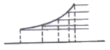
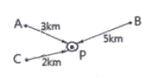
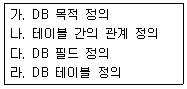
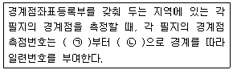

지적산업기사 (2017-08-26 기출문제)
1과목: 지적측량
1. 지적도근측량에서 측정한 경사거리가 600m, 연직각이 60°일 때 수평거리는?
- 300m
- 370m
- 300√2m
- 740√3m
(정답률: 81%)

2. 경위의 측량방법에 따른 지적삼각점의 관측과 계산에 대한 설명으로 옳은 것은?
- 1방향각의 수평각 측각공차는 30초 이내이다.
- 수평각 관측은 2대회의 방향관측법에 의한다.
- 관측은 5초독(秒讀) 이상의 경위의를 사용한다.
- 수평각 관측시 윤곽도는 0도, 60도, 100도로 한다.
(정답률: 69%)
3. 다음 중 경위의측량방법에 따른 세부측량에서 토지의 경계가 곡선인 경우 직선으로 연결하는 곡선의 중앙종거의 길이 기준으로 옳은 것은?
- 1cm 이상 5cm 이하
- 3cm 이상 5cm 이하
- 5cm 이상 7cm 이하
- 5cm 이상 10cm 이하
(정답률: 71%)
4. 지적측량의 측량기간 기준으로 옳은 것은?(단, 지적기준점을 설치하여 측량하는 경우는 고려하지 않는다.)
- 4일
- 5일
- 6일
- 7일
(정답률: 72%)
5. 우연오차에 대한 설명으로 옳지 않은 것은?
- 오차의 발생 원인이 명확하지 않다.
- 부정오차(random error)라고도 한다.
- 확률에 근거하여 통계적으로 오차를 처리한다.
- 같은 크기의 (+)오차는 (-)오차보다 자주 발생한다.
(정답률: 76%)
6. 지적측량에 사용되는 구소삼각지역의 직각좌표계 원점이 아닌 것은?
- 가리원점
- 동경원점
- 망산원점
- 조본원점
(정답률: 68%)
7. 평판측량방법에 따른 세부측량용 도선법으로 하는 경우, 도선의 변의 수 기준은?
- 10개 이하
- 20개 이하
- 30개 이하
- 40개 이하
(정답률: 80%)
8. 등록전환측량을 평판측량방법으로 실시할 때 그 방법으로 옳지 않은 것은?
- 교회법
- 도선법
- 방사법
- 현형법
(정답률: 79%)
9. 지상 경계를 결정하고자 할 때의 기준으로 옳지 않은 것은?
- 토지가 수면에 접하는 경우 : 최소만조위가 되는 선
- 연접되는 토지 간에 높낮이 차이가 있는 경우 : 그 구조물 등의 하단부
- 도로･구거 등의 토지에 절토(切土)된 부분이 있는 경우 : 그 경사면의 상단부
- 공유수면매립지의 토지 중 제방 등을 토지에 편입하여 등록하는 경우 : 바깥쪽 어깨부분
(정답률: 79%)
10. 광파기측량방법에 따른 지적삼각보조점의 점간 거리를 5회 측정한 결과의 평균치가 2435.44m일 때, 이 측정치의 최대치와 최소치의 교차가 최대 얼마 이하이어야 이 평균치를 측정거리로 할 수 있는가?
- 0.01m
- 0.02m
- 0.04m
- 0.06m
(정답률: 67%)
11. 배각법에 의해 도근측량을 실시하여 종선차의 합이 -140.10m, 종선차의 기지값이 -140.30m, 횡선차의 합이 320.20m, 횡선차의 기지값이 320.25m일 때 연결오차는?
- 0.21m
- 0.30m
- 0.25m
- 0.31m
(정답률: 53%)
12. 평면 삼각형 ABC의 측각치 ∠A, ∠B, ∠C의 폐합오차는?(단, 폐합오차는 W로 표시한다.)
- W＝180°-( ∠B+∠C)
- W＝∠A+∠B+∠C-180°
- W＝∠A+∠B+∠C-360°
- W＝360°-(∠A+∠B+∠C)
(정답률: 80%)
13. 지적도근점측량에서 지적도근점을 구성하여야 하는 도선으로 옳지 않은 것은?
- 결합도선
- 폐합도선
- 개방도선
- 왕복도선
(정답률: 87%)
14. 지적도의 제도에 관한 설명으로 옳지 않은 것은?
- 도곽선은 폭 0.1mm로 제도한다.
- 지번 및 지목은 2mm 이상 3mm 이하의 크기로 제도한다.
- 지적도근점은 직경 3mm의 원으로 제도한다.
- 도곽선 수치는 2mm 크기의 아라비아 숫자로 주기한다.
(정답률: 67%)
15. 다음 중 지번과 지목의 제도방법에 대한 설명으로 옳지 않은 것은?
- 지번은 경계에 닿지 않도록 필지의 중앙에 제도한다.
- 1필지의 토지가 형상이 좁고 길게 된 경우 가로쓰기가 되도록 도면을 왼쪽 또는 오른쪽으로 돌려서 제도할 수 있다.
- 지번은 고딕체, 지목은 명조체로 제도한다.
- 1필지의 면적이 작은 경우 지번과 지목은 부호를 붙이고, 도곽선 밖에 그 부호･지번 및 지목을 제도할 수 있다.
(정답률: 70%)
16. 경위의측량방법과 교회법에 따른 지적삼각보조점측량의 관측 및 계산 기준으로 옳은 것은?
- 1방향각의 공차는 50초 이내이다.
- 수평각 관측은 3배각 관측법에 따른다.
- 2개의 삼각형으로부터 계산한 위치의 연결교차가 0.30m 이하일 때에는 그 평균치를 지적삼각 보조점의 위치로 한다.
- 관측은 30초독 이상의 경위의를 사용한다.
(정답률: 61%)
17. 토지조사사업 당시의 측량 조건으로 옳지 않은 것은?
- 일본의 동경원점을 이용하여 대삼각망을 구성하였다.
- 통일된 원점 체계를 전 국토에 적용하였다.
- 가우스상사이중투영법을 적용하였다.
- 벳셀(Bessel)타원체를 도입하였다.
(정답률: 68%)
18. 지적확정측량을 시행할 때에 필지별 경계점 측정에 사용되지 않는 점은?
- 위성기준점
- 통합기준점
- 지적삼각점
- 지적도근보조점
(정답률: 59%)
19. 중부원점지역에서 사용하는 축척 1/600 지적도 1도곽에 포용되는 면적은?
- 20000m2
- 30000m2
- 40000m2
- 50000m2
(정답률: 53%)
20. 등록전환 시 임야대장상 말소면적과 토지대장상 등록면적과의 허용오차 산출식은?(단, M은 임야도의 축척분모, F는 등록 전환될 면적이다.)
- A=0.0262Mㆍ√F
- A=0.026MㆍF
- A=0.0262MㆍF
- A=0.026Mㆍ√F
(정답률: 88%)
2과목: 응용측량
21. GPS의 위성신호에서 P코드의 주파수 크기로 옳은 것은?
- 10.23MHz
- 1227.60MHz
- 1574.42MHz
- 1785.13MHz
(정답률: 58%)
22. 그림과 같은 사면을 지형도에 표시할 때에 대한 설명으로 옳은 것은?

- 지형도 상의 등고선간의 거리가 일정한 사면
- 지형도 상에서 상부는 등고선간의 거리가 넓고 하부에서는 좁은 사면
- 지형도 상에서 상부는 등고선간의 거리가 좁고 하부에서는 넓은 사면
- 지형도 상에서 등고선간의 거리가 높이에 비례하여 일정하게 증가하는 사면
(정답률: 79%)
23. 출발점에 세운표척과 도착점에 세운 표척을 같게 하는 이유는?
- 정준의 불량으로 인한 오차를 소거한다.
- 수직축의 기울어짐으로 인한 오차를 제거한다.
- 기포관의 감도불량으로 인한 오차를 제거한다.
- 표척의 상태(마모 등)로 인한 오차를 소거한다.
(정답률: 54%)
24. 그림과 같은 수준망에서 수준점 P의 최확값은?(단, A점에서의 관측지반고 10.15m, B점에서의 관측지반고 10.16m, C점에서의 관측지반고 10.18m)

- 10.180m
- 10.166m
- 10.152m
- 10.170m
(정답률: 68%)
25. 다음 중 터널에서 중심선 측량의 가장 중요한 목적은?
- 터널 단면의 변위 측정
- 인조점의 바른 매설
- 터널입구 형상의 측정
- 정확한 방향과 거리 측정
(정답률: 81%)
26. 터널 내 두 점의 좌표가 A점(102.34m, 340.26m), B점(145.45m, 423.86m)이고 표고는 A점 53.20m, B점 82.35m일 때 터널의 경사각은?
- 17°12′7″
- 17°13′7″
- 17°14′7″
- 17°15′7″
(정답률: 53%)
27. 단곡선을 설치하기 위해 교각을 관측하여 46°30′를 얻었다. 곡선 반지름이 200m일 때 교점으로부터 곡선시점까지의 거리는?
- 210.76m
- 1⑤.38m
- 85.93m
- 85.51m
(정답률: 61%)
28. 지적삼각점의 신설을 위해 가장 적합한 GNSS 측량 방법은?
- 정지측량방식(static)
- DGPS(Differential GPS)
- Stop & Go 방식
- RTK(Real Time Kinematic)
(정답률: 85%)
29. 지형도의 표시방법에 해당되지 않는 것은?
- 등고선법
- 방사법
- 점고법
- 채색법
(정답률: 72%)
30. 지형측량의 작업공정으로 옳은 것은?
- 측량계획→조사 및 선점→세부측량→기준점측량→측량원도 작성→지도편집
- 측량계획→조사 및 선점→기준점측량→측량원도 작성→세부측량→지도편집
- 측량계획→기준점측량→조사 및 선점→세부측량→측량원도 작성→지도편집
- 측량계획→조사 및 선점→기준점측량→세부측량→측량원도 작성→지도편집
(정답률: 64%)
31. 수치사진측량에서 영상정합의 분류 중, 영상소의 밝기 값을 이용하는 정합은?
- 영역기준 정합
- 관계형 정합
- 형상기준 정합
- 기호 정합
(정답률: 52%)
32. 곡선반지름 115m인 원곡선에서 현의 길이 20m에 대한 편각은?
- 2°51′21″
- 3°48′29″
- 4°58′56″
- 5°29′38″
(정답률: 56%)
33. 화각(피사각)이 90°이고 일반도화 판독용으로 사용하는 카메라로 옳은 것은?
- 초광각 카메라
- 광각 카메라
- 보통각 카메라
- 협각 카메라
(정답률: 75%)
34. 노선측량에 사용되는 곡선 중 주요 용도가 다른 것은?
- 2차 포물선
- 3차 포물선
- 클로소이드 곡선
- 렘니스케이트 곡선
(정답률: 83%)
35. 간접수준측량으로 관측한 수평거리가 5km일 때, 지구의 곡률오차는?(단, 지구의 곡률반지름은 6370km)
- 0.862m
- 1.962m
- 3.925m
- 4.862m
(정답률: 41%)
36. GNSS(Golbal Navigation Satellite System) 측량에서 의사거리 결정에 영향을 주는 오차의 원인으로 가장 거리가 먼 것은?
- 위성의 궤도 오차
- 위성의 시계 오차
- 안테나의 구심 오차
- 지상의 기상 오차
(정답률: 74%)
37. 항공사진의 특수 3점에 해당되지 않는 것은?
- 부점
- 연직점
- 등각점
- 주점
(정답률: 84%)
38. 항공사진판독에 대한 설명으로 틀린 것은?
- 사진판독은 단시간에 넓은 지역을 판독할 수 있다.
- 근적외선 영상은 식물과 물을 판독하는데 유용하다.
- 수목의 종류를 판독하는 주요 요소는 음영이다.
- 색조, 모양, 입체감 등이 나타나지 않는 지역은 판독에 어려움이 있다.
(정답률: 68%)
39. 등고선에 관한 설명 중 틀린 것은?
- 주곡선은 등고선 간격의 기준이 되는 선이다.
- 간곡선은 주곡선 간격의 1/2마다 표시한다.
- 조곡선은 간곡선 간격의 1/4마다 표시한다.
- 계곡선은 주곡선 5개마다 굵게 표시한다.
(정답률: 78%)
40. 단곡선에서 교각 I＝36°20′, 반지름 R＝500m 노선의 기점에서 교점까지의 거리는 6500m이다. 20m 간격으로 중심말뚝을 설치할 때 종단현의 길이( )는?
- 7m
- 10m
- 13m
- 16m
(정답률: 40%)
3과목: 토지정보체계론
41. 지적전산화의 목적과 가장 거리가 먼 것은?
- 지방 행정전산화의 촉진
- 국토기본도의 정확한 작성
- 신속하고 정확한 지적 민원 처리
- 토지 관련 정책 자료의 다목적 활용
(정답률: 57%)
42. 디지타이징이나 스캐닝에 의해 도형정보파일을 생성할 경우 발생할 수 있는 오차에 대한 설명으로 옳지 않은 것은?
- 도곽의 신축이 있는 도면의 경우 부분적인 오차만 발생하므로 정확한 독취 자료를 얻을 수 있다.
- 디지타이저에 의한 도면 독취 시 작업자의 숙련도에 따라 오차가 발생할 수 있다.
- 스캐너로 읽은 래스터 자료를 벡터 자료로 변환할 때 오차가 발생한다.
- 입력도면이 평탄하지 않은 경우 오차 발생을 유발한다.
(정답률: 77%)
43. 레이어에 대한 설명으로 옳은 것은?
- 레이어간의 객체이동은 할 수 없다.
- 지형･지물을 기호로 나타내는 규칙이다.
- 속성테이터를 관리하는데 사용하는 것이다.
- 같은 성격을 가지는 공간객체를 같은 층으로 묶어준다.
(정답률: 65%)
44. 데이터베이스의 데이터 언어 중 데이터 조작어가 아닌 것은?
- CREATE문
- DELETE문
- SELECT문
- UPDATE문
(정답률: 66%)
45. 현황 참조용 영상 자료와 지적도 파일을 중첩하여 지적도의 필지 경계선 조정 작업을 할 경우, 정확도 면에서 가장 효율적인 자료는?
- 1:5000 축적의 항공사진 정사영상 자료
- 소축척 지형도 스캔 영상 자료
- 중저해상도 위성영상 자료
- 소축척의 도로 망도
(정답률: 67%)
46. 점, 선, 면 등의 객체(object)들 간의 공간관계가 설정되지 못한 채 일련의 좌표에 의한 그래픽 형태로 저장되는 구조로, 공간분석에는 비효율적이지만 자료구조가 매우 간단하여 수치지도를 제작하고 갱신하는 경우에는 효율적인 자료 구조는?
- 래스터(raster) 구조
- 위상(topology) 구조
- 스파게티(spaghetti) 구조
- 체인코드(chain codes) 구조
(정답률: 69%)
47. PBLIS의 개발 내용 중 옳지 않은 것은?
- 지적측량시스템
- 건축물관리시스템
- 지적공부관리시스템
- 지적측량성과 작성 시스템
(정답률: 76%)
48. 지적데이터의 속성정보라 할 수 없는 것은?
- 지적도
- 토지대장
- 공유지연명부
- 대지권등록부
(정답률: 71%)
49. 수치화된 지적도의 레이어에 해당하지 않는 것은?
- 지번
- 기준점
- 도곽선
- 소유자
(정답률: 77%)
50. 발전단계에 따른 지적제도 중 토지정보체계의 기초로서 가장 적합한 것은?
- 법지적
- 과세지적
- 소유지적
- 다목적지적
(정답률: 57%)
51. SQL 언어에 대한 설명으로 옳은 것은?
- order는 보통 질의어에서 처음에 나온다.
- select 다음에는 테이블명이 나온다.
- where 다음에는 조건식이 나온다.
- from 다음에는 필드명이 나온다.
(정답률: 57%)
52. 토지정보시스템(Land Information System)의 데이터의 구성요소와 관련이 없는 것은?
- 도면정보
- 위치정보
- 속성정보
- 서비스정보
(정답률: 81%)
53. LIS에서 DBMS의 개념을 적용함에 따른 장점으로 가장 거리가 먼 것은?
- 관련 자료간의 자동 갱신이 가능하다.
- 자료의 표현과 저장 방식을 통합하는 것이 가능하다.
- 도형 및 속성자료간에 물리적으로 명확한 관계가 정의될 수 있다.
- 자료의 중앙제어를 통해 데이터베이스의 신뢰도를 증진시킬 수 있다.
(정답률: 22%)
54. 고유번호 4567891232-20002-0010인 토지에 대한 설명으로 옳지 않은 것은?
- 지번은 2-10이다.
- 32는 리는 타나낸다.
- 45는 시･도를 나타낸다.
- 912는 읍･면･동을 나타낸다.
(정답률: 69%)
55. NGIS 구축의 단계적 추진에서 3단계 사업이 속하는 단계는?
- GIS 기반조성단계
- GIS 정착단계
- GIS 수정보완단계
- GIS 활용확산단계
(정답률: 50%)
56. 파일처리방식과 데이터베이스 관리시스템에 대한 설명으로 옳지 않은 것은?
- 파일처리방식은 데이터의 중복성이 발생한다.
- 파일처리방식은 데이터의 독립성을 지원하지 못한다.
- 데이터베이스 관리시스템은 운영비용면에서 경제적이다.
- 데이터베이스 관리시스템은 데이터의 일관성을 유지하게 한다.
(정답률: 73%)
57. 데이터베이스 시스템을 집중형과 분산형으로 구분할 때 집중형 데이터베이스의 장점으로 옳은 것은?(오류 신고가 접수된 문제입니다. 반드시 정답과 해설을 확인하시기 바랍니다.)
- 자료 관리가 경제적이다.
- 자료의 통신비용이 저렴한 편이다.
- 자료에의 분산형보다 접근 속도가 신속한 편이다.
- 데이터베이스 사용자를 위한 교육 및 자문이 편리하다.
(정답률: 32%)
58. 시･군･구 단위의 지적전산자료를 이용하려는 자는 누구에게 승인을 받아야 하는가?
- 관계 중앙행정기관의 장
- 행정안전부장관
- 지적소관청
- 시･도지사
(정답률: 74%)
59. 벡터자료 구조에 있어서 폴리곤 구조의 특성과 관계가 먼 것은?
- 형상
- 계급성
- 변환성
- 인접성
(정답률: 40%)
60. 데이터베이스 디자인의 순서로 옳은 것은?

- 가-나-다-라
- 가-다-나-라
- 가-라-나-다
- 가-라-다-나
(정답률: 54%)
4과목: 지적학
61. 다음 중 지번의 역할에 해당하지 않는 것은?
- 위치 추정
- 토지이용 구분
- 필지의 구분
- 물권 객체 단위
(정답률: 63%)
62. 다음 중 근대적 등기제도를 확립한 제도는?
- 과전법
- 입안제도
- 지계제도
- 수등이척제
(정답률: 54%)
63. 지번의 진행방향에 따른 부번방식(附番方式)이 아닌 것은?
- 절충식(折衷式)
- 우수식(隅數式)
- 사행식(蛇行式)
- 기우식(奇隅式)
(정답률: 64%)
64. 다음 중 지적의 기본이념으로만 열거된 것은?
- 국정주의, 형식주의, 공개주의
- 형식주의, 민정주의, 직권등록주의
- 국정주의, 형식적심사주의, 직권등록주의
- 등록임의주의, 형식적심사주의, 공개주의
(정답률: 73%)
65. 1720년부터 1723년 사이에 이탈리아 밀라노의 지적도 제작 사업에서 전 영토를 측량하기 위해 사용한 지적도의 축척으로 옳은 것은?
- 1/1000
- 1/1200
- 1/2000
- 1/3000
(정답률: 49%)
66. 토지등록제도에 있어서 권리의 객체로서 모든 토지를 반드시 특정적이면서도 단순하고 명확한 방법에 의하여 인식될 수 있도록 개별화함을 의미하는 토지 등록 원칙은?
- 공신의 원칙
- 등록의 원칙
- 신청의 원칙
- 특정화의 원칙
(정답률: 81%)
67. 지적불부합으로 인해 발생되는 사회적 측면의 영향이 아닌 것은?
- 토지분쟁의 빈발
- 토지거래질서의 문란
- 주민의 권리행사 용이
- 토지표시사항의 확인 곤란
(정답률: 78%)
68. 토지 1필지의 성립 요건이 될 수 없는 것은?
- 소유자가 같아야 한다.
- 지반이 연속되어 있어야 한다.
- 지적도의 축척이 같아야 한다.
- 경계가 되는 지물(地物)이 있어야 한다.
(정답률: 79%)
69. 다목적지적의 3대 구성요소가 아닌 것은?
- 기본도
- 지적도
- 측지기준망
- 토지이용도
(정답률: 72%)
70. 다음 중 3차원 지적이 아닌 것은?
- 평면지적
- 지표공간
- 지중공간
- 입체지적
(정답률: 78%)
71. 다음 중 지목을 체육용지로 할 수 없는 것은?
- 경마장
- 경륜장
- 스키장
- 승마장
(정답률: 80%)
72. 토지조사부의 설명으로 옳지 않은 것은?
- 토지소유권의 사정원부로 사용되었다.
- 토지조사부는 토지대장의 완성과 함께 그 기능을 발휘하였다.
- 국유지와 민유지로 구분하여 정리하였고, 공유지는 이름을 연기하여 적요란에 표시하였다.
- 동･리마다 지번 순에 따라 지번, 가지번, 지목, 신고연월일, 소유자의 주소 및 성명 등을 기재하였다.
(정답률: 51%)
73. 우리나라 현행 토지대장의 특성으로 옳지 않은 것은?
- 전산파일로도 등록･처리한다.
- 물권객체의 공시기능을 갖는다.
- 물적편성주의를 채택하고 있다.
- 등록내용은 법률적 효력을 갖지는 않는다.
(정답률: 84%)
74. 토지조사사업 당시 면적이 10평 이하인 협소한 토지의 면적 측정 방법으로 옳은 것은?
- 삼사법
- 계적기법
- 푸라니미터법
- 전자면적측정기법
(정답률: 70%)
75. 토지의 성질, 즉 지질이나 토질에 따라 지목을 분류하는 것은?
- 단식 지목
- 용도 지목
- 지형 지목
- 토성 지목
(정답률: 76%)
76. 토지를 등록하는 지적공부의 체계의 토지대장 등록지와 임야대장 등록지를 하게 된 직접적인 원인은?
- 등록정보 구분
- 조사사업의 상이
- 토지과세 구분
- 토지이용도 구분
(정답률: 64%)
77. 물권 설정 측면에서 지적의 3요소로 볼 수 없는 것은?
- 공부
- 국가
- 등록
- 토지
(정답률: 81%)
78. 정전제(井田制)를 주장한 학자가 아닌 것은?
- 한백겸(韓百謙)
- 서명응(徐命膺)
- 이기(李沂)
- 세키야(關野貞)
(정답률: 68%)
79. 토지조사사업 당시 토지의 사정권자로 옳은 것은?
- 도지사
- 토지조사국
- 임시토지조사국장
- 고등토지조사위원회
(정답률: 53%)
80. 지적공부를 복구할 수 있는 자료가 되지 못하는 것은?
- 지적공부의 등본
- 부동산등기부 등본
- 법원의 확정판결서 정본
- 지적공부등록현황 집계표
(정답률: 61%)
5과목: 지적관계
81. 지적업무처리규정상 지적측량성과검사 시 세부 측량의 검사항목으로 옳지 않은 것은?
- 면적측량의 정확여부
- 관측각 및 거리측정의 정확여부
- 기지점과 지상경계와의 부합여부
- 측량준비도 및 측량결과도 작성의 적정여부
(정답률: 38%)
82. 다음 중 토지의 이동에 해당하는 것은?
- 신규등록
- 소유권 변경
- 토지 등급 변경
- 수확량 등급 변경
(정답률: 68%)
83. 도해지적에서 동일한 경계가 축척이 다른 도면에 각각 등록되어 있을 경우 경계의 최우선순위는?
- 평균하여 사용한다.
- 대축척 경계에 따른다.
- 소관청이 임의로 결정한다.
- 토지소유자 의견에 따른다.
(정답률: 82%)
84. 공간정보의 구축 및 관리 등에 관한 법령상 축척변경 승인신청 시 첨부하여야 하는 서류로 옳지 않은 것은?
- 지번등 명세
- 축척변경의 사유
- 토지소유자의 동의서
- 토지수용위원회의 의결서
(정답률: 57%)
85. 지적공부를 복구하려는 경우에는 복구하려는 토지의 표시 등을 시･군･구 게시판 및 인터넷 홈페이지에 며칠 이상 게시하여야 하는가?
- 15일 이상
- 20일 이상
- 25일 이상
- 30일 이상
(정답률: 74%)
86. 공간정보의 구축 및 관리 등에 관한 법령상 지적소관청이 해당 토지소유자에게 지적정리 등의 통지를 하여야 하는 경우가 아닌 것은?
- 지적소관청이 지적공부를 복구하는 경우
- 지적소관청이 측량성과를 검사하는 경우
- 지적소관청이 지번부여지역의 전부 또는 일부에 대하여 지번을 새로 부여한 경우
- 지적소관청이 직권으로 조사･측량하여 지적공부의 등록 사항을 결정하는 경우
(정답률: 52%)
87. 지적도에 등록된 경계점의 정밀도를 높이기 위하여 실시하는 것은?
- 경계복원
- 등록전환
- 신규등록
- 축척변경
(정답률: 64%)
88. 토지소유자가 신규등록을 신청할 때에 신규등록 사유를 적는 신청서에 첨부하여야 하는 서류에 해당하지 않는 것은?
- 사업인가서와 지번별 조서
- 법원의 확정판결서 정본 또는 사본
- 소유권을 증명할 수 있는 서류의 사본
- 공유수면 관리 및 매립에 관한 법률에 따른 준공검사확인증 사본
(정답률: 51%)
89. 지적공부(대장)에 등록하는 면적단위는?
- 평 또는 보
- 홉 또는 무
- 제곱미터
- 평 또는 무
(정답률: 80%)
90. 지적측량 시행규칙상 경계점좌표등록부에 등록된 지역에서의 필지별 면적측정 방법으로 옳은 것은?
- 도상삼사계산법
- 좌표면적계산법
- 푸라니미터기법
- 전자면적측정기법
(정답률: 77%)
91. 공간정보의 구축 및 관리 등에 관한 법령상 지번부여 방법에 대한 설명으로 옳지 않은 것은?
- 지번은 북서에서 남동으로 순차적으로 부여한다.
- 신규등록 및 등록전환의 경우에는 그 지번 부여지역에서 인접토지의 본번에 부번을 붙여서 지번을 부여한다.
- 분할의 경우에는 분할 후의 필지 중 1필지의 지번은 분할 전의 지번으로 하고, 나머지 필지의 지번은 본번의 최종 부번 다음 순번으로 부번을 부여한다.
- 합병의 경우에는 합병 대상 지번 중 후순위 지번을 그 지번으로 하되, 본번으로 된 지번이 있는 때에는 본번 중 후순위의 지번을 합병후의 지번으로 한다.
(정답률: 71%)
92. 지적재조사에 관한 특별법령상 지적재조사 사업을 위한 지적측량을 고의로 진실에 반하게 측량하거나 지적재조사사업 성과를 거짓으로 등록한 자에게 처하는 벌칙으로 옳은 것은?
- 300만 원 이하의 벌금
- 500만 원 이하의 벌금
- 1년 이하의 징역 또는 1천만 원 이하의 벌금
- 2년 이하의 징역 또는 2천만 원 이하의 벌금
(정답률: 47%)
93. 다음 내용 중 ㉠, ㉡에 들어갈 말로 모두 옳은 것은?

- ㉠ : 오른쪽 위에서 ㉡ : 왼쪽
- ㉠ : 오른쪽 아래에서 ㉡ : 왼쪽
- ㉠ : 왼쪽 위에서 ㉡ : 오른쪽
- ㉠ : 왼쪽 아래에서 ㉡ : 오른쪽
(정답률: 75%)
94. 지적업무처리규정상 지적측량수행자가 지적측량 정보를 처리할 수 있는 시스템에 측량 준비파일을 등록하여 자료를 조사하여야 하는 사항이 아닌 것은?
- 측량연혁
- 토지의 지목
- 경계 및 면적
- 지적기준점 성과
(정답률: 33%)
95. 공간정보의 구축 및 관리 등에 관한 법령상 지적측량수행자의 성실의무에 관한 설명으로 옳지 않은 것은?
- 정당한 사유 없이 지적측량 신청을 거부하여서는 아니 된다.
- 배우자 이외에 직계 존속･비속이 소유한 토지에 대한 지적측량을 할 수 있다.
- 지적측량수수료 외에는 어떠한 명목으로도 그 업무와 관련된 대가를 받으면 아니 된다.
- 지적측량수행자는 신의와 성실로 공정하게 지적측량을 하여야 한다.
(정답률: 81%)
96. 공유수면매립지를 신규 등록하는 경우에 신규 등록의 효력이 발생하는 시기로서 타당한 것은?
- 매립준공인가시
- 부동산보존등기한 때
- 지적공부에 등록한 때
- 측량성과도의 교부한 때
(정답률: 48%)
97. 측량준비파일 작성 시 붉은색으로 정리하여야 할 사항이 아닌 것은?(단, 따로 규정을 둔 사항은 고려하지 않는다.)
- 경계선
- 도곽선
- 도곽선 수치
- 지적기준점 간 거리
(정답률: 45%)
98. 다음 중 지적재조사사업에 관한 기본계획 수립시 포함해야 하는 사항으로 옳지 않은 것은?
- 지적재조사사업의 시행기간
- 지적재조사사업에 관한 기본방향
- 지적재조사사업비의 특별자치도를 제외한 행정구역별 배분 계획
- 지적재조사사업에 필요한 인력 확보계획
(정답률: 54%)
99. 공간정보의 구축 및 관리 등에 관한 법령상 축척변경시행에 따른 청산금의 산정 및 납부고지등, 이의신청에 관한 설명으로 옳은 것은?
- 청산금의 이의신청은 지적소관청에 하여야 한다.
- 청산금의 초과액은 국가의 수입으로 하고 부족액은 지방자치단체가 부담한다.
- 지적소관청은 토지소유자에게 수령통지를 한 날부터 9개월 이내에 청산금을 지급하여야 한다.
- 지적소관청은 청산금의 결정을 공고한 날부터 30일 이내에 토지소유자에게 납부고지 또는 수령통지를 하여야 한다.
(정답률: 44%)
100. 지적측량 시행규칙상 지적삼각보조점측량에 있어서 그 측량성과를 그대로 결정하기 위한 지적측량성과와 검사 성과간의 연결교차의 허용범위로 옳은 것은?
- 0.10m
- 0.15m
- 0.20m
- 0.25m
(정답률: 56%)
수평거리 = 경사거리 × cos(연직각)
따라서, 주어진 문제에서 수평거리는 다음과 같이 계산할 수 있다.
수평거리 = 600m × cos(60°)
= 600m × 0.5
= 300m
따라서, 정답은 "300m"이다.